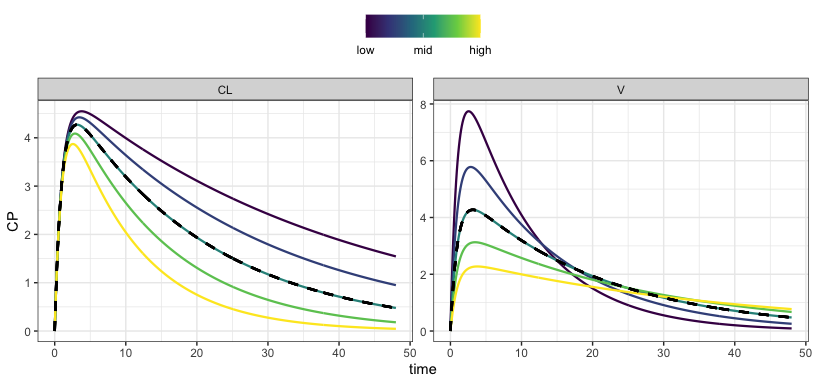
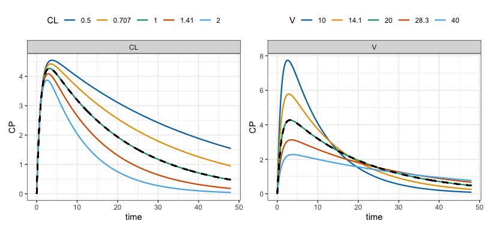
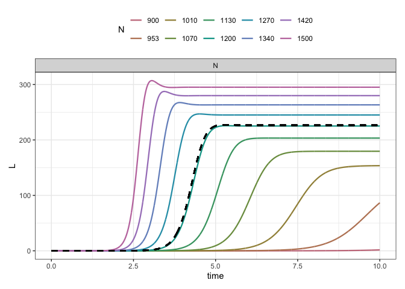
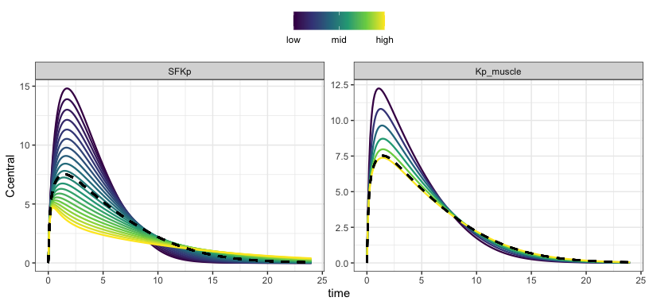
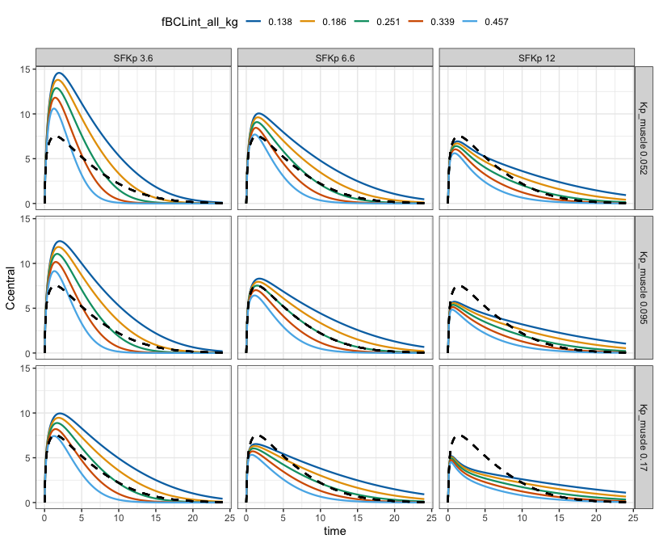
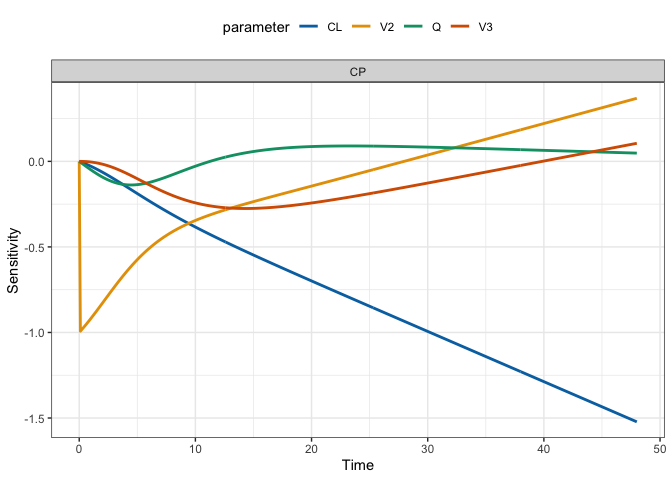

Models in mrgsolve have “parameters” associated with them.
Parameters are name-value pairs that are usually involved in controlling how the system advances in time. Parameters could be clearances (CL), rate constants (k), pharmacodynamic parameters (EC50) or even covariates (WT … weight). mrgsim.sa does one-at-a-time sensitivity analysis on parameters in your model.
PK model sensitivity analysis by factor
The nominal (in model) parameter value is divided and multiplied by a factor, generating minimum and maximum bounds for simulating a sequence of parameter values. In this example, we vary CL and V, each one at a time.
out <-
mod %>%
ev(amt = 100) %>%
select_par(CL, V) %>%
parseq_fct(.n = 5) %>%
sens_each()
sens_plot(out, "CP")
In this sensitivity analysis, CL is varied at the value of V in the model parameter list and V is varied at the value of CL in the model parameter list. The black dashed line indicates the model prediction based on CL and V both as they are in the parameter list; this is the “reference”.
The simulated data is returned in a long format
out. # A tibble: 14,520 × 7
. case time p_name p_value dv_name dv_value ref_value
. * <int> <dbl> <chr> <dbl> <chr> <dbl> <dbl>
. 1 1 0 CL 0.5 EV 0 0
. 2 1 0 CL 0.5 EV 0 100
. 3 1 0 CL 0.5 CENT 0 0
. 4 1 0 CL 0.5 CENT 0 0
. 5 1 0 CL 0.5 CP 0 0
. # ℹ 14,515 more rowsThe previous plot focused on relative changes in the PK profile for “lower” and “higher” values of CL and V according to the parseq_ method. You can plot with a more quantitative color scale and legend using grid = TRUE.
sens_plot(out, "CP", grid = TRUE)
HIV viral dynamic model
In another example, we look at latent infected cell pool development over ten years at different “burst” size, or the number of HIV particles released when one cell lyses.
mod <- mread("hiv", "inst/example")
mod %>%
update(end = 365*10) %>%
parseq_range(N = c(900,1500), .n = 10) %>%
sens_each(tscale = 1/365) %>%
sens_plot("L", grid = TRUE)
Sensitivity analysis on custom sequences
The model is rifampicin PBPK.
mod <- mread("inst/example/rifampicin.cpp", delta = 0.1)
sims <-
mod %>%
ev(amt = 600) %>%
parseq_manual(
SFKp = seq_fct(.$SFKp, n = 20),
Kp_muscle = seq_even(0.001, 0.1, n = 6)
) %>% sens_each()
sens_plot(sims, "Ccentral")
Simulate a grid
To this point, we have always used sens_each() so that each value for each parameter is simulated one at a time. Now, simulate the grid or all combinations of the sensitivity parameters.
We use parseq_cv() here, which generates lower and upper bounds for the range using 50% coefficient of variation.
out <-
mod %>%
update(outvars = "Ccentral") %>%
ev(amt = 600) %>%
parseq_cv(fBCLint_all_kg, .n = 5) %>%
parseq_cv(SFKp, Kp_muscle, .n = 3) %>%
sens_grid(recsort = 3)
out. # A tibble: 10,980 × 8
. case fBCLint_all_kg SFKp Kp_muscle time dv_name dv_value ref_value
. * <int> <dbl> <dbl> <dbl> <dbl> <chr> <dbl> <dbl>
. 1 1 0.138 3.65 0.0520 0 Ccentral 0 0
. 2 1 0.138 3.65 0.0520 0 Ccentral 0 0
. 3 1 0.138 3.65 0.0520 0 Ccentral 0 0
. 4 1 0.138 3.65 0.0520 0 Ccentral 0 0
. 5 1 0.138 3.65 0.0520 0.1 Ccentral 3.66 3.14
. # ℹ 10,975 more rows
sens_plot(out, "Ccentral")
The output is more complicated because all the selected parameters have varying “sensitivity” values.
Local sensitivity analysis
In local sensitivity analysis, we vary each sensitivity parameter a very small amount around the parameter list (model) value and see how much the output changes for a unit change in the parameter. The “sensitivity” is plotted over time.
mod <- modlib("pk2", delta = 0.1, end = 48)
doses <- ev(amt = 100)
out <- lsa(mod, var = "CP", par = "CL,V2,Q,V3", events = doses)
out. # A tibble: 1,928 × 5
. time dv_name dv_value p_name sens
. <dbl> <chr> <dbl> <chr> <dbl>
. 1 0 CP 0 CL 0
. 2 0 CP 0 CL 0
. 3 0.1 CP 0.472 CL -0.00254
. 4 0.2 CP 0.893 CL -0.00514
. 5 0.3 CP 1.27 CL -0.00782
. # ℹ 1,923 more rows
lsa_plot(out)